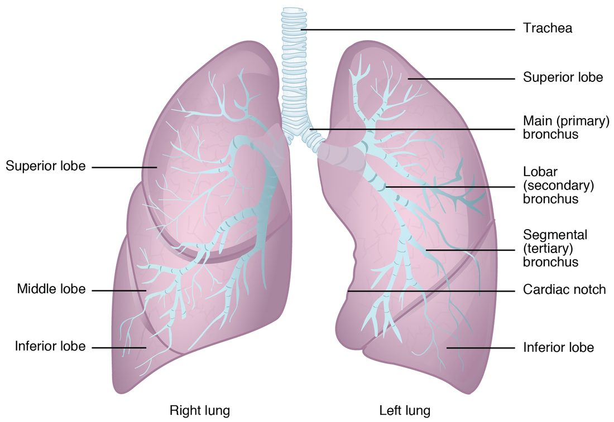

Trachea, bronchial tree, alveoli and lungs
The trachea is held open by C-shaped hyaline cartilage rings, closed behind by the trachealis muscle, and divides at the carina into the primary bronchi; the right one is wider, shorter and more vertical, so inhaled objects usually lodge there.
Part 1 · Clinical hook
Why this matters
Two-year-old Leo was eating peanuts when he began coughing hard. The coughing settled, but two days later he is wheezing on one side, and his doctor hears fainter breath sounds over his right chest. A camera passed down his trachea finds a peanut half blocking his right primary bronchus. Why the right side, and why did the air beyond the peanut stop moving so well?
Part 2 · Foundations
What this builds on
Part 3 · Prerequisite check
Quick check before you start
1. What lines the alveoli, the tiny air sacs of the lungs?
- Simple squamous epithelium
- Stratified squamous epithelium
- Simple columnar epithelium
Show the answer
Alveoli are lined by simple squamous epithelium: one layer of flat cells, the thinnest possible barrier for substances to cross.
- Correct: Simple squamous epithelium:
- Stratified squamous epithelium:
- Simple columnar epithelium:
2. Which change makes a substance diffuse across a barrier faster?
- A thicker barrier
- A smaller surface area
- A larger surface area
Show the answer
Diffusion rate rises with surface area and falls with diffusion distance. A larger area lets more molecules cross at once.
- A thicker barrier:
- A smaller surface area:
- Correct: A larger surface area:
3. Which chamber of the heart pumps blood into the pulmonary circuit?
- Left ventricle
- Right ventricle
- Right atrium
Show the answer
The right ventricle pumps deoxygenated blood into the pulmonary trunk and on to the lungs. The left ventricle pumps into the aorta and the systemic circuit.
- Left ventricle:
- Correct: Right ventricle:
- Right atrium:
Part 4 · Anatomy panel
Anatomy

With labels hidden, select a box to reveal its label.
Part 5 · Causal chain
How it works, step by step
- The bronchial tree divides about 23 times, from the trachea down to the alveolar sacs.It ends in hundreds of millions of alveoli, giving a total surface of tens of square meters.
- Type I alveolar cells and capillary endothelial cells are spread extremely thin and share one fused basement membrane.The respiratory membrane between air and blood is only about 0.5 µm thick.
- A huge surface area and a very short diffusion distance are both factors that raise diffusion rate.Oxygen and carbon dioxide cross between alveolar air and capillary blood in a fraction of a second.
- The capillaries in the alveolar walls carry the whole output of the right ventricle past this surface.Blood returning to the left atrium through the pulmonary veins is oxygenated.
Part 6 · Key ideas
Key ideas
- Your trachea is held open by C-shaped rings of hyaline cartilage. The open back of each ring is closed only by the trachealis muscle and connective tissue, a soft wall that gives way when the esophagus behind it bulges with a swallowed mouthful.
- The carina (Latin for keel) is the keel-shaped ridge of the last tracheal cartilage, where the trachea divides into the two primary bronchi. The right primary bronchus is wider, shorter and more nearly vertical than the left, so an inhaled object usually falls into it.
- The parietal pleura (pariet- = wall) is the layer of pleural membrane that lines the inside of your chest wall, the top of the diaphragm and the side of the mediastinum. The visceral pleura covers the lung itself, and the pleural cavity between the two holds only a thin film of fluid. The parietal layer is very sensitive to pain.
- The bronchial arteries are small branches of the systemic circuit, from the thoracic aorta or an intercostal artery. They carry oxygenated blood to the airways, connective tissue and visceral pleura, about 1 to 2 percent of cardiac output, while the pulmonary arteries carry blood to the alveoli.
- Surfactant (short for surface-active agent) is a lipid-protein film that type II alveolar cells secrete onto the water lining each alveolus. It lowers surface tension, the pull between water molecules that tries to shrink the alveolus.
Part 7 · Core concept
Core concepts
Part 8 · Misconception
A common mistake
The wrong idea: The pleural cavity is an air-filled space around each lung.
What actually happens: In a healthy person the pleural cavity is not an open space and contains no air. It is a gap of about 10 to 20 micrometers between the visceral and parietal pleura, filled with a thin film of pleural fluid. That film lets the layers slide but holds the lung surface against the chest wall, so the lung follows the chest wall as it moves.
Part 9 · Retrieval check
Check yourself
Anything you miss goes into your review queue.
1. Name the pinned feature.
- Cardiac notch
- Hilum
- Oblique fissure
- Apex of the lung
Show the answer
The hollow in the front edge of the left lung, where the heart lies, is the cardiac notch.
- Correct: Cardiac notch: Correct. Only the left lung has a cardiac notch, because the heart lies mostly left of the midline.
- Hilum: The hilum is on the mediastinal (inner) surface, where the bronchus and vessels enter, not a notch in the front edge.
- Oblique fissure: The oblique fissure is a deep groove that separates the lobes; it runs diagonally across the lung.
- Apex of the lung: The apex is the narrow top of the lung, which rises above the clavicle.
2. Name the pinned structure.
- Alveolar pore
- Alveolar sac
- Terminal bronchiole
- Alveolar duct
Show the answer
The alveolar duct is the short passage at the end of a respiratory bronchiole whose walls are made of alveolar openings. It leads into the alveolar sacs.
- Alveolar pore: Alveolar pores are small holes in the walls between neighboring alveoli, not passages leading to them.
- Alveolar sac: An alveolar sac is the grape-like cluster of alveoli at the end of the duct.
- Terminal bronchiole: The terminal bronchiole is higher up, before any alveoli appear.
- Correct: Alveolar duct: Correct. This passage between the respiratory bronchiole and the alveolar sacs is an alveolar duct.
3. A 3-year-old breathes in a small plastic bead while playing. Where is it most likely to lodge?
- The left primary bronchus
- The right primary bronchus
- The nasopharynx
- The carina
Show the answer
The right primary bronchus is wider, shorter and more nearly vertical than the left, so an object falling down the trachea tends to continue straight into it.
- The left primary bronchus: The left primary bronchus leaves the trachea at a sharper angle to pass under the aortic arch, so objects enter it less often.
- Correct: The right primary bronchus: Correct. The straighter, wider right primary bronchus is the usual site.
- The nasopharynx: The nasopharynx lies above the larynx; an object that has been breathed in has already passed below it.
- The carina: The carina is the ridge between the two primary bronchi. An object touching it triggers a cough but does not usually stay there.
4. What does the C shape of the tracheal cartilages allow?
- The trachea to stretch longer during swallowing
- Air to leak into the esophagus when pressure is high
- The esophagus to bulge forward when you swallow a large mouthful
- The cartilage to divide into bronchi
Show the answer
The open back of each ring is closed only by the trachealis muscle and connective tissue, a soft wall that gives way when the esophagus behind it swells with food. The rigid front and sides still keep the airway open.
- The trachea to stretch longer during swallowing: The C shape concerns the back wall, not the length. Elastic tissue between the rings lets the trachea lengthen as you move your neck.
- Air to leak into the esophagus when pressure is high: The trachea and esophagus are separate tubes; air does not pass between them through the back wall.
- Correct: The esophagus to bulge forward when you swallow a large mouthful: Correct. The soft back wall lets the esophagus expand into it.
- The cartilage to divide into bronchi: The bronchi form where the trachea divides at the carina; the C shape of the rings has nothing to do with branching.
5. In Mr. Ruiz's lungs, fluid has collected in the walls between his alveoli, making the barrier between air and blood several times thicker. His breathing is otherwise unchanged. What happens to the movement of oxygen from his alveoli into his blood?
- It slows down
- It speeds up
- It is unchanged
- Oxygen moves from blood to air instead
Show the answer
Diffusion rate falls as diffusion distance rises. A thicker respiratory membrane makes oxygen take longer to cross, so less crosses during the brief time each red blood cell spends in an alveolar capillary.
- Correct: It slows down: Correct. A longer diffusion distance slows diffusion.
- It speeds up: Oxygen still has to cross the whole thickened barrier; extra fluid lengthens the path rather than helping.
- It is unchanged: Nothing here changes the gradient or the area, but distance also sets diffusion rate, and it has increased.
- Oxygen moves from blood to air instead: Oxygen still moves from alveolar air, where there is more of it, into the blood; only its rate changes.
6. Fill the gap: terminal bronchiole → ____ → alveolar duct → alveolar sac → alveolus.
- Tertiary bronchus
- Alveolar pore
- Primary bronchus
- Respiratory bronchiole
Show the answer
After the terminal bronchiole comes the respiratory bronchiole, the first airway with alveoli in its wall, which leads into alveolar ducts.
- Tertiary bronchus: Tertiary bronchi come well before the terminal bronchioles.
- Alveolar pore: Alveolar pores are holes between neighboring alveoli, not a step along the airway.
- Primary bronchus: The primary bronchus is near the start of the tree, just below the trachea.
- Correct: Respiratory bronchiole: Correct. The respiratory bronchiole links the terminal bronchiole to the alveolar ducts.
7. A clot blocks a small branch of Mr. Bell's right pulmonary artery. The alveoli beyond it can no longer take part in gas exchange, yet the lung tissue there usually does not die. Why?
- The pulmonary veins reverse direction and supply it
- Alveolar pores carry blood from neighboring alveoli
- The tissue needs very little oxygen
- Its bronchial arteries still supply it
Show the answer
The lungs have a second, systemic blood supply. The bronchial arteries, branches of the aorta, keep feeding the airway walls and connective tissue even when a pulmonary artery branch is blocked.
- The pulmonary veins reverse direction and supply it: Veins do not reverse to supply tissue; pulmonary veins carry blood toward the left atrium.
- Alveolar pores carry blood from neighboring alveoli: Alveolar pores pass air between alveoli, not blood.
- The tissue needs very little oxygen: Lung tissue is living tissue and needs oxygen like any other.
- Correct: Its bronchial arteries still supply it: Correct. The double blood supply is what protects the tissue.
Part 10 · Summary
Summary
The trachea is held open by C-shaped hyaline cartilage rings, closed behind by the trachealis muscle, and divides at the carina into the primary bronchi; the right one is wider, shorter and more vertical, so inhaled objects usually lodge there. The bronchial tree continues through secondary (lobar) and tertiary (segmental) bronchi to bronchioles without cartilage, terminal bronchioles (end of the conducting zone), respiratory bronchioles, alveolar ducts, alveolar sacs and alveoli. Type I alveolar cells form the thin gas-crossing wall; type II cells secrete surfactant, a lipid-rich film that lowers surface tension, and replace type I cells; alveolar macrophages clean the surface; alveolar pores link neighbors. The respiratory membrane (type I cell, fused basement membrane, capillary endothelium) is about 0.5 µm thick. The right lung has three lobes and two fissures, the left two lobes, one fissure and a cardiac notch; structures enter at the hilum. Visceral and parietal pleura enclose a thin film of pleural fluid. The pulmonary circulation exchanges gases; the bronchial arteries feed the lung's own tissue.
Part 11 · Up next
What comes next
Part 12 · Connections